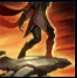
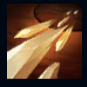
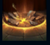
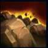
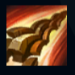

Talon
| Talon The Blade's Shadow | |
|---|---|
| Release date | 24.08.2011 |
| Class | Assassin |
| Positions | Middle |
| Resource | Mana |
| Range type | Melee |
| Adaptive type | Physical |
| Base statistics | |||
| Health | 588 – 2203 | Mana | 377.2 – 1006.2 |
| Health regen. | 8.5 – 21.25 |
Mana regen. | 7.6 – 21.2 |
| Armor | 30 – 89.5 | Attack damage | 68 – 120.7 |
| Magic resist. | 39 – 60.25 | Crit. damage | 175% |
| Move. speed | 335 | Attack range | 125 |
Talon este cuțitul din umbră, un asasin necruțător ce poate lovi neștiut, făcându-se apoi nevăzut fără să declanșeze vreo alarmă. Și-a câștigat reputația pe străzile brutale ale Noxusului, unde a fost obligat să lupte, să ucidă și să fure pentru a supraviețui. După ce a fost adoptat de renumita familie Du Couteau, a început să-și folosească talentul de ucigaș la comanda imperiului, asasinând lideri, căpitani și eroi din rândul inamicilor... cât și pe orice noxian suficient de nesăbuit cât să atragă mânia stăpânilor săi. |  |
TĂIETURI ADÂNCI Vrăjile lui Talon ''rănesc'' campionii și monștrii mari, efect care se cumulează de până la 3 ori. Când Talon atacă un campion care are 3 cumuluri de ''răni'', acesta sângerează, suferind daune mari în timp. |
||
|---|---|---|---|---|
 |
DIPLOMAȚIE NOXIANĂ Talon atacă unitatea-țintă. Dacă aceasta se află în raza de atac melee, suferă daune critice. Dacă se află în afara razei de atac melee, Talon va sări către ea și o va înjunghia. Dacă abilitatea ucide ținta, Talon primește puțină viață, iar o parte din timpul de reactivare al abilității scade. |
|||
 |
POTOP DE PUMNALE Talon aruncă o serie de pumnale care se întorc la el, provocând daune fizice de fiecare dată când trec printr-un inamic. La întoarcere, pumnalele provoacă daune suplimentare și încetinesc unitățile lovite. |
|||
|  |
CALEA ASASINULUI Talon sare peste orice teren sau structură, până la o distanță maximă. Abilitatea are un timp scurt de reactivare, dar Talon nu mai poate sări din nou peste terenul folosit timp de o perioadă lungă. |
|||
 |
ASALT DIN UMBRĂ Talon aruncă pumnale într-un cerc, devine invizibil și primește un bonus la viteza de mișcare. Când redevine vizibil, pumnalele se reped spre locul în care se află el. De fiecare dată când pumnalele se mișcă, ''Asaltul din umbră'' le provoacă daune fizice inamicilor loviți de cel puțin unul dintre ele. |